Code
library(tidyverse)
library(tidycensus)
library(sf)
library(caret)
Sys.getenv("CENSUS_API_KEY") != ""[1] TRUEPredicting the renter share of Philadelphia census tracts
Rutong Chen
October 15, 2026
Philadelphia has both renters and homeowners, and the mix changes from one neighborhood to the next. In this analysis, I try to predict the share of homes that are rented in each census tract. I start with a simple model that uses Census data, then add new features made from the city’s open data, and then reshape some variables. After each change, I record how well the model predicts tracts it has not seen, so I can tell which changes really help.
[1] TRUEI test every model with the helper below. It splits the tracts into 10 groups, trains the model on 9 of them, and checks how far off it is on the 10th, repeating this 10 times. It uses the same split every time, so all models are tested fairly. It also stops if a variable has missing values, so no tracts are dropped by mistake.
ctrl <- trainControl(method = "cv", number = 10)
cv_rmse <- function(formula, data) {
df <- if (inherits(data, "sf")) st_drop_geometry(data) else data
vars <- all.vars(formula)
bad <- vars[sapply(vars, function(v) any(is.na(df[[v]])))]
if (length(bad) > 0) {
stop("These variables have NAs: ", paste(bad, collapse = ", "),
". Fill them or choose another variable (Rule 1: don't drop rows).")
}
set.seed(5080)
fit <- train(formula, data = df, method = "lm", trControl = ctrl)
fit$results$RMSE
}My outcome is the renter share: the number of renter households (B25003_003) divided by all occupied homes (B25003_001). For the baseline model, I use four Census variables that should be related to renting: median household income, median age, average household size, and the share of adults with a bachelor’s degree or higher. I do not use the number of units in a building (B25024). Apartment buildings are almost always rented, so that variable would nearly give away the answer. This is called leakage.
philly_tracts <- get_acs(
geography = "tract",
state = "PA",
county = "Philadelphia",
variables = c(
total_pop = "B01003_001",
occ_units = "B25003_001", # occupied housing units
renter_occ = "B25003_003", # renter-occupied units
med_inc = "B19013_001", # median household income
med_age = "B01002_001", # median age
avg_hh_size = "B25010_001", # average household size
edu_total = "B15003_001", # population 25+
ba = "B15003_022",
ma = "B15003_023",
prof = "B15003_024",
phd = "B15003_025"
),
year = 2023,
survey = "acs5",
output = "wide",
geometry = TRUE
) %>%
st_transform(2272)
|
| | 0%
|
|= | 1%
|
|= | 2%
|
|== | 3%
|
|=== | 4%
|
|=== | 5%
|
|==== | 6%
|
|===== | 7%
|
|====== | 8%
|
|====== | 9%
|
|======= | 10%
|
|======== | 11%
|
|======== | 12%
|
|========== | 14%
|
|========== | 15%
|
|=========== | 16%
|
|============ | 17%
|
|============ | 18%
|
|============= | 19%
|
|============== | 20%
|
|=============== | 21%
|
|=============== | 22%
|
|================ | 23%
|
|================ | 24%
|
|================= | 25%
|
|================== | 25%
|
|=================== | 26%
|
|=================== | 27%
|
|==================== | 28%
|
|===================== | 29%
|
|===================== | 30%
|
|====================== | 31%
|
|======================= | 32%
|
|======================= | 33%
|
|======================== | 34%
|
|========================= | 35%
|
|========================= | 36%
|
|========================== | 37%
|
|=========================== | 38%
|
|=========================== | 39%
|
|============================ | 40%
|
|============================= | 41%
|
|============================== | 42%
|
|============================== | 43%
|
|=============================== | 44%
|
|================================ | 45%
|
|================================ | 46%
|
|================================= | 47%
|
|================================== | 48%
|
|================================== | 49%
|
|=================================== | 50%
|
|==================================== | 51%
|
|==================================== | 52%
|
|===================================== | 53%
|
|====================================== | 54%
|
|======================================= | 55%
|
|======================================= | 56%
|
|======================================== | 57%
|
|========================================= | 58%
|
|========================================= | 59%
|
|========================================== | 60%
|
|=========================================== | 61%
|
|=========================================== | 62%
|
|============================================ | 63%
|
|============================================= | 64%
|
|============================================= | 65%
|
|============================================== | 66%
|
|=============================================== | 67%
|
|================================================ | 68%
|
|================================================ | 69%
|
|================================================= | 70%
|
|================================================== | 71%
|
|================================================== | 72%
|
|=================================================== | 73%
|
|==================================================== | 74%
|
|==================================================== | 75%
|
|===================================================== | 76%
|
|====================================================== | 77%
|
|====================================================== | 78%
|
|======================================================= | 79%
|
|======================================================== | 80%
|
|======================================================== | 81%
|
|========================================================= | 82%
|
|========================================================== | 83%
|
|=========================================================== | 84%
|
|=========================================================== | 85%
|
|============================================================ | 86%
|
|============================================================= | 87%
|
|============================================================= | 88%
|
|============================================================== | 88%
|
|=============================================================== | 89%
|
|=============================================================== | 90%
|
|================================================================ | 91%
|
|================================================================= | 92%
|
|================================================================= | 93%
|
|================================================================== | 94%
|
|=================================================================== | 95%
|
|=================================================================== | 96%
|
|==================================================================== | 97%
|
|===================================================================== | 98%
|
|===================================================================== | 99%
|
|======================================================================| 100%The outcome is a percentage, so I use moe_prop() to get its margin of error. I then use it to calculate the coefficient of variation (CV), which shows how reliable each estimate is.
philly_tracts <- philly_tracts %>%
mutate(
y = case_when(
occ_unitsE > 0 ~ renter_occE / occ_unitsE * 100,
TRUE ~ NA_real_
),
y_moe = case_when(
occ_unitsE > 0 ~ moe_prop(renter_occE, occ_unitsE, renter_occM, occ_unitsM) * 100,
TRUE ~ NA_real_
),
y_cv = case_when(
y > 0 ~ (y_moe / 1.645) / y * 100,
TRUE ~ NA_real_
),
med_inc = med_incE,
med_age = med_ageE,
avg_hh_size = avg_hh_sizeE,
pct_ba = case_when(
edu_totalE > 0 ~ (baE + maE + profE + phdE) / edu_totalE * 100,
TRUE ~ NA_real_
)
)A CV below 12% means the estimate is reliable, 12% to 40% means somewhat reliable, and above 40% means unreliable.
[1] 20 Min. 1st Qu. Median Mean 3rd Qu. Max. NAs
1.778 11.472 15.127 16.764 21.059 67.534 21 reliability n
1 Reliable 111
2 Somewhat reliable 271
3 Unavailable 21
4 Unreliable 5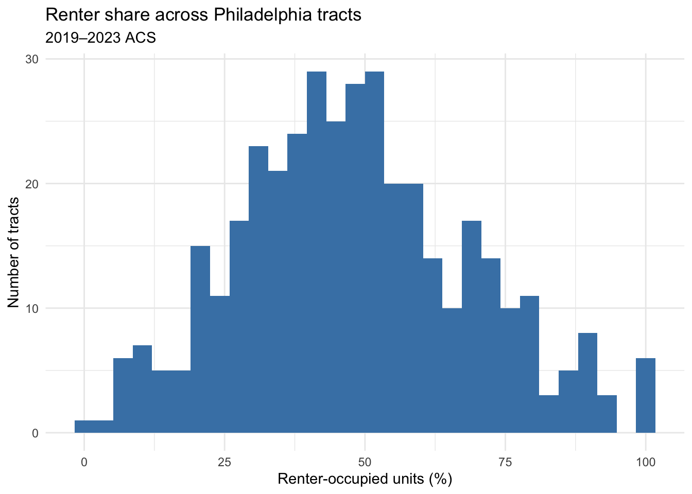
The renter share is fairly reliable because it is based on large numbers: every occupied home is either owned or rented. Of the 408 tracts, 20 have no value. The median CV is 15.1%. 111 tracts are reliable, 271 are somewhat reliable, only 5 are unreliable, and 21 have no CV. Five unreliable tracts is only about 1%, far below the one-third limit, so this outcome is safe to model. The few unreliable tracts are places where very few people rent. A city agency, such as the Division of Housing and Community Development, could use this prediction to find renter neighborhoods and target programs like eviction prevention and home repair help.
I filter the tracts once here. Every later step uses the same tracts data.
[1] 408[1] 381I drop 27 of 408 tracts and keep 381. The dropped tracts have no residents or households, such as Fairmount Park, the airport, and industrial areas along the rivers, or they are missing income data. Almost no renters live in them.
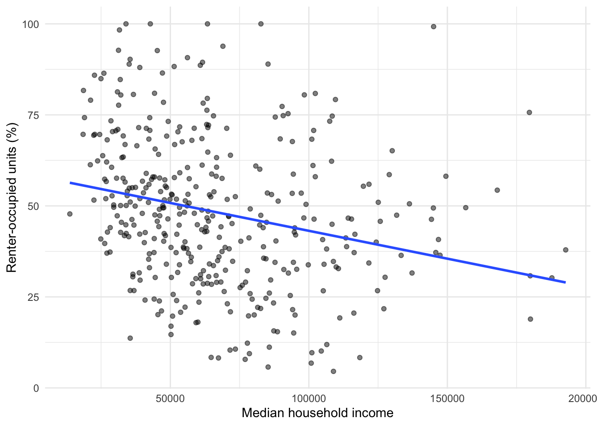
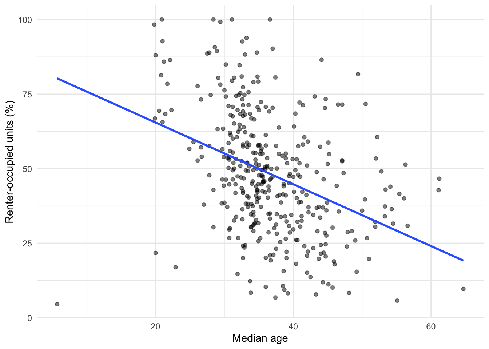
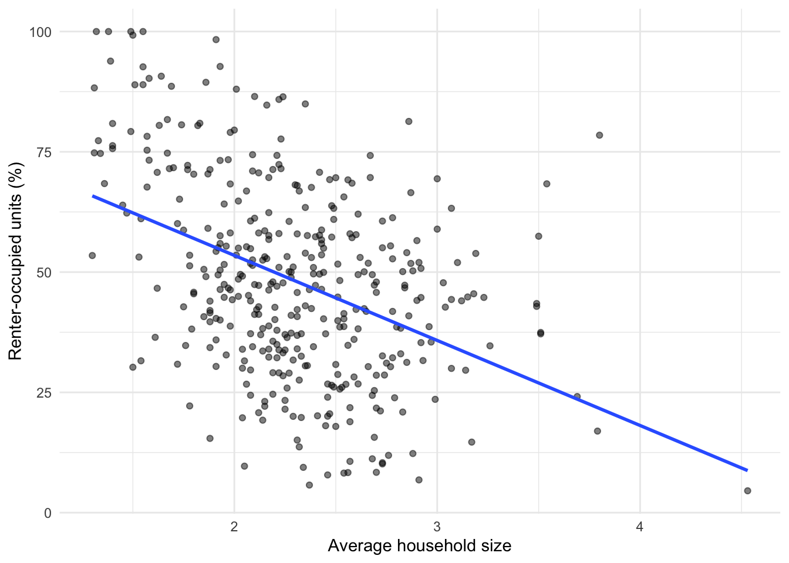
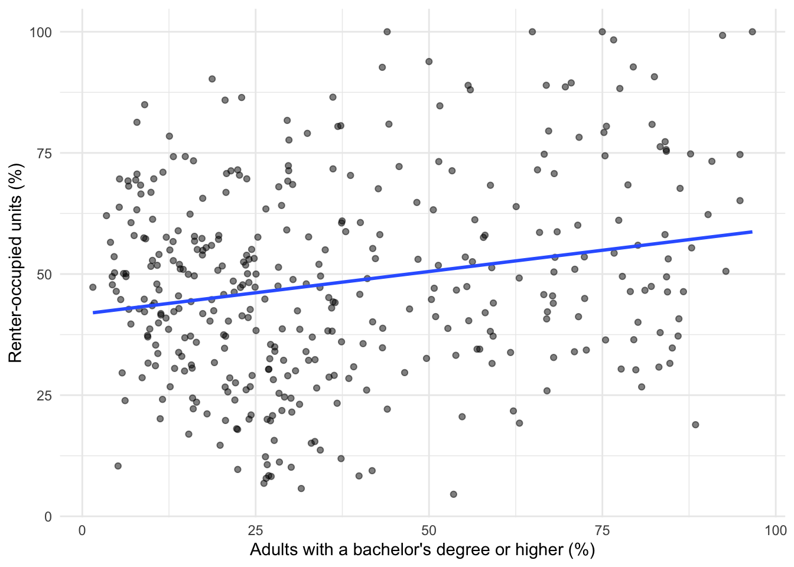
Call:
lm(formula = f1, data = tracts)
Residuals:
Min 1Q Median 3Q Max
-39.131 -8.968 -0.077 9.321 43.913
Coefficients:
Estimate Std. Error t value Pr(>|t|)
(Intercept) 1.464e+02 8.153e+00 17.960 < 2e-16 ***
med_inc -3.835e-04 3.678e-05 -10.425 < 2e-16 ***
med_age -1.061e+00 1.061e-01 -10.002 < 2e-16 ***
avg_hh_size -1.961e+01 2.187e+00 -8.965 < 2e-16 ***
pct_ba 3.083e-01 6.144e-02 5.017 8.09e-07 ***
---
Signif. codes: 0 '***' 0.001 '**' 0.01 '*' 0.05 '.' 0.1 ' ' 1
Residual standard error: 13.33 on 376 degrees of freedom
Multiple R-squared: 0.5779, Adjusted R-squared: 0.5734
F-statistic: 128.7 on 4 and 376 DF, p-value: < 2.2e-16# A tibble: 1 × 4
model added cv_rmse notes
<chr> <chr> <dbl> <chr>
1 m1 ACS baseline 13.4 income, median age, household size, % BA+On tracts it has not seen, the baseline model is off by about 13.4 percentage points on average. Its R² is 0.58, which means these four Census variables already explain more than half of the differences in renter share between tracts.
tracts <- tracts %>% mutate(resid_m1 = residuals(m1))
ggplot(tracts) +
geom_sf(aes(fill = resid_m1), color = NA) +
scale_fill_gradient2(low = "#2166ac", mid = "grey95", high = "#b2182b", midpoint = 0) +
theme_void() +
labs(title = "Baseline model: where it's wrong",
subtitle = "Red = more renters than predicted",
fill = "Residual")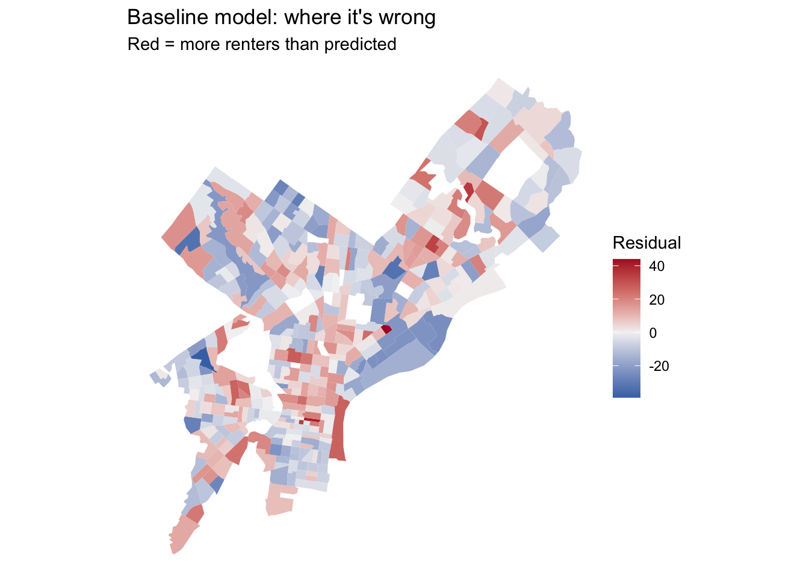
The errors are not random; they form clusters. Blue means fewer renters than predicted, and red means more renters than predicted. The clearest blue area runs along the Delaware River north of Center City, with more blue tracts in parts of the Northwest. Red areas appear in South Philadelphia, including the large tract on the southern waterfront, in Manayunk and Roxborough, and in parts of the lower Northeast. One possible reason: along the Delaware, newer residents with college degrees live next to long-time homeowners, so the model expects more renters than there really are. In South Philadelphia and Manayunk, many rowhouses are rented to young adults. The model also does not know where students live or how safe a neighborhood is. So in Part 3, I add university campuses, burglaries, and shootings.
I pull three data layers. All of them are from 2023 or earlier, so the model does not use information from the future. I count the records that have no location and remove them.
# Layer 1: residential burglaries, 2023
burglary <- carto_get(
"SELECT the_geom, text_general_code, dispatch_date
FROM incidents_part1_part2
WHERE dispatch_date >= '2023-01-01' AND dispatch_date < '2024-01-01'
AND text_general_code = 'Burglary Residential'"
) %>%
st_transform(st_crs(tracts))
nrow(burglary)[1] 3800[1] 119[1] 1673[1] 1shootings <- shootings %>% filter(!st_is_empty(shootings))
# Layer 3: university and college campuses
universities <- st_read("https://hub.arcgis.com/api/v3/datasets/8ad76bc179cf44bd9b1c23d6f66f57d1_0/downloads/data?format=geojson&spatialRefId=4326&where=1%3D1", quiet = TRUE) %>%
st_transform(st_crs(tracts))
nrow(universities)[1] 644[1] 0119 of 3,800 burglary records and 1 of 1,673 shooting records have no location, so I remove them. All 644 campus records have a location.
I chose these layers based on the Part 2C map. Campuses show where students live, and students are mostly renters. The campus file has no year, but these campuses existed well before 2023, so it does not break the time rule. Burglaries and shootings describe neighborhood conditions that income alone does not show. None of these layers is made from renter data, so there is no leakage.
I divide the counts by tract area. Otherwise, bigger tracts would simply have more of everything.
tracts <- tracts %>%
mutate(
area_sqmi = as.numeric(st_area(.)) / 27878400,
n_burglary = lengths(st_intersects(., burglary)),
burglary_per_sqmi = n_burglary / area_sqmi,
n_shootings = lengths(st_intersects(., shootings)),
shootings_per_sqmi = n_shootings / area_sqmi
)
summary(tracts$burglary_per_sqmi) Min. 1st Qu. Median Mean 3rd Qu. Max.
0.00 13.59 33.54 52.94 69.96 367.98 Min. 1st Qu. Median Mean 3rd Qu. Max.
0.000 0.000 9.743 22.150 28.321 311.871 Min. 1st Qu. Median Mean 3rd Qu. Max.
0.0000 0.4090 0.8668 1.2407 1.8154 4.4928 Min. 1st Qu. Median Mean 3rd Qu. Max.
0.1729 2.3091 4.3983 5.0474 7.1631 14.7878 f2 <- y ~ med_inc + med_age + avg_hh_size + pct_ba + dist_univ_mi
model_log <- model_log %>%
add_row(model = "m2", added = "distance to nearest campus",
cv_rmse = cv_rmse(f2, tracts),
notes = "nearest distance")
f3 <- y ~ med_inc + med_age + avg_hh_size + pct_ba + dist_univ_mi +
burglary_per_sqmi
model_log <- model_log %>%
add_row(model = "m3", added = "burglary density",
cv_rmse = cv_rmse(f3, tracts),
notes = "2023 residential burglaries per sq mi")
f4 <- y ~ med_inc + med_age + avg_hh_size + pct_ba + dist_univ_mi +
burglary_per_sqmi + shootings_per_sqmi
model_log <- model_log %>%
add_row(model = "m4", added = "shooting density",
cv_rmse = cv_rmse(f4, tracts),
notes = "2023 shooting victims per sq mi")
f5 <- y ~ med_inc + med_age + avg_hh_size + pct_ba + dist_univ_mi +
burglary_per_sqmi + shootings_per_sqmi + dist_ch_mi
model_log <- model_log %>%
add_row(model = "m5", added = "distance to City Hall",
cv_rmse = cv_rmse(f5, tracts),
notes = "distance to one place")
model_log %>% mutate(cv_rmse = round(cv_rmse, 2)) %>% print(width = Inf)# A tibble: 5 × 4
model added cv_rmse
<chr> <chr> <dbl>
1 m1 ACS baseline 13.4
2 m2 distance to nearest campus 13.4
3 m3 burglary density 13.4
4 m4 shooting density 13.4
5 m5 distance to City Hall 13.4
notes
<chr>
1 income, median age, household size, % BA+
2 nearest distance
3 2023 residential burglaries per sq mi
4 2023 shooting victims per sq mi
5 distance to one place None of the spatial features helped much. Burglary density was the only one that lowered the error, from 13.45 to 13.38. This may be because burglaries happen more where homes are packed closely together, which is also where many renters live. Even so, it did not beat the baseline’s 13.35. Distance to the nearest campus helped the least: it raised the error from 13.35 to 13.45. The campus file has 644 separate buildings spread across the city, so almost every tract is close to one, and the distance does not point to student neighborhoods. Age and education already capture most of the student effect. Shooting density (13.40) and distance to City Hall (13.43) did not help either, probably because income and education already describe the same neighborhood differences.
I do not change the outcome itself, so all errors stay in percentage points and can be compared.
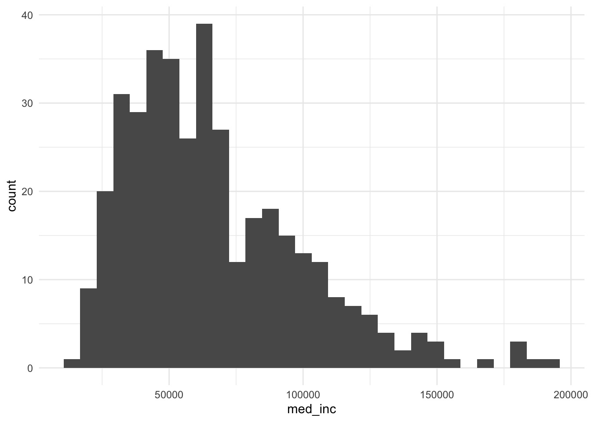
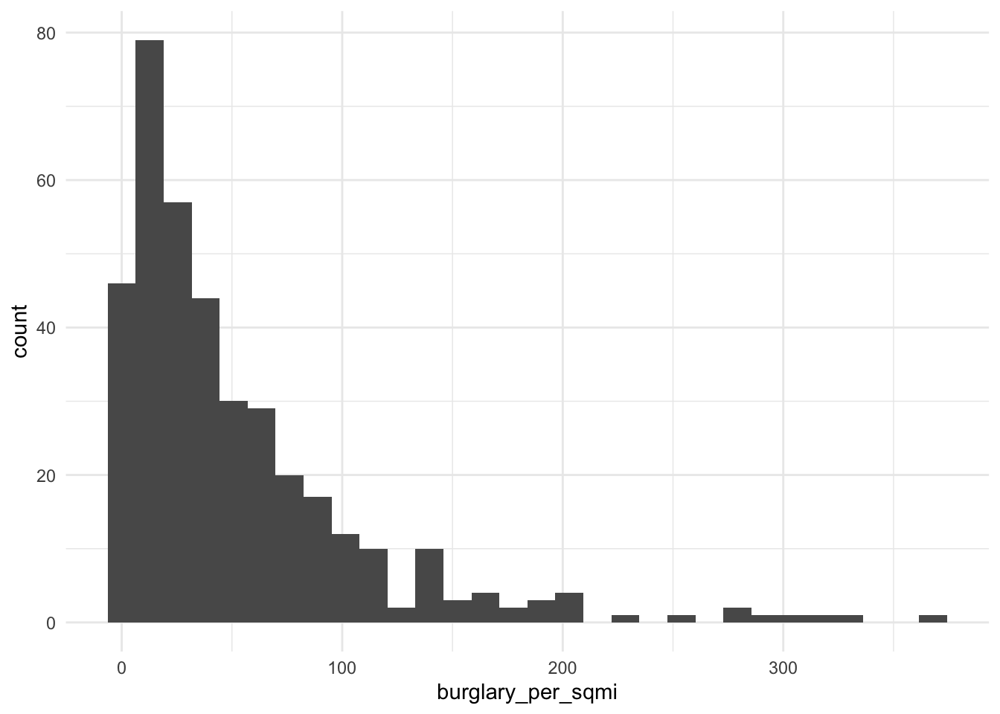
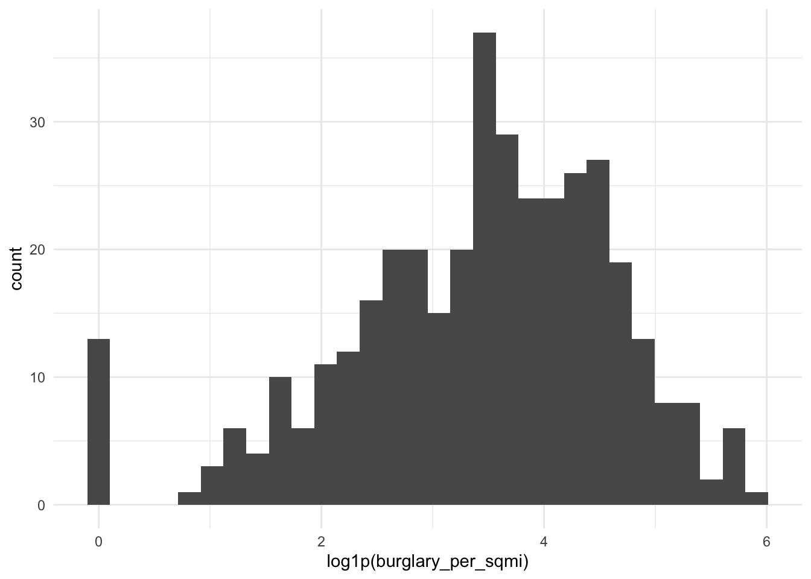
Income and both densities are skewed: most tracts have small values and a few have very large ones. A log shrinks those large values. I use log() for income, which is never 0, and log1p() for the densities, which can be 0.
f_log <- y ~ log(med_inc) + med_age + avg_hh_size + pct_ba + dist_univ_mi +
log1p(burglary_per_sqmi) + log1p(shootings_per_sqmi) + dist_ch_mi
model_log <- model_log %>%
add_row(model = "m6", added = "log of income and both densities",
cv_rmse = cv_rmse(f_log, tracts),
notes = "log() for income; log1p() for densities")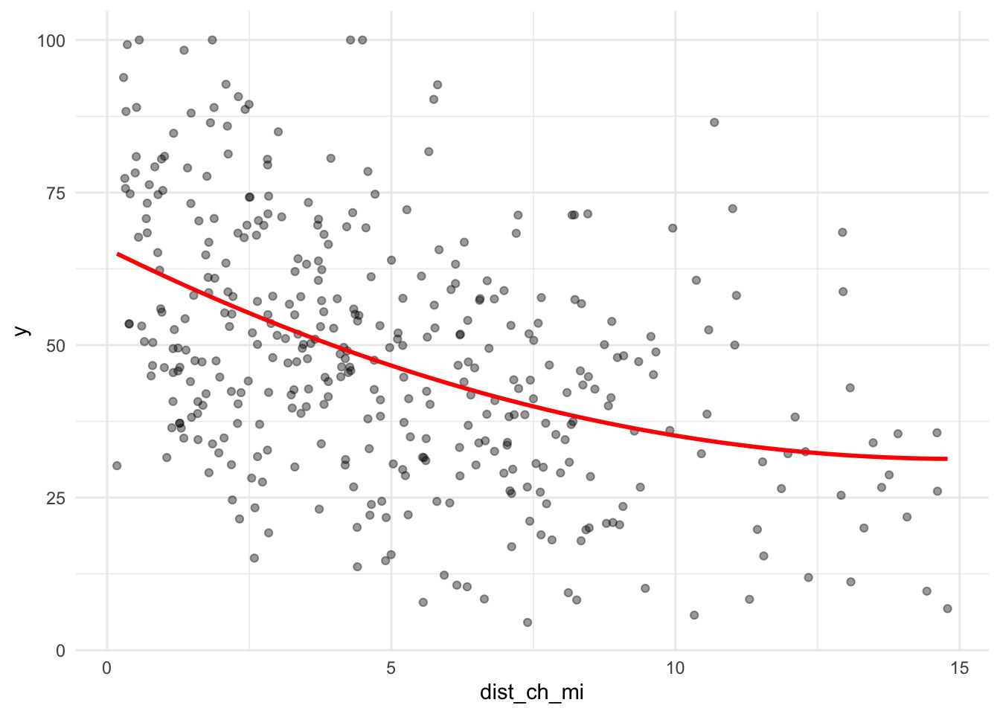
f_sq <- y ~ log(med_inc) + med_age + avg_hh_size + pct_ba + dist_univ_mi +
log1p(burglary_per_sqmi) + log1p(shootings_per_sqmi) + dist_ch_mi + I(dist_ch_mi^2)
model_log <- model_log %>%
add_row(model = "m7", added = "squared distance to City Hall",
cv_rmse = cv_rmse(f_sq, tracts),
notes = "m6 + I(dist_ch_mi^2)") ring n
1 Core 79
2 Inner 134
3 Outer 168
Call:
lm(formula = f_cat, data = tracts)
Residuals:
Min 1Q Median 3Q Max
-37.897 -8.231 -0.807 7.469 42.812
Coefficients:
Estimate Std. Error t value Pr(>|t|)
(Intercept) 416.54737 23.95187 17.391 < 2e-16 ***
log(med_inc) -28.05511 2.42191 -11.584 < 2e-16 ***
med_age -0.93512 0.11358 -8.233 3.17e-15 ***
avg_hh_size -18.06255 2.20547 -8.190 4.30e-15 ***
pct_ba 0.30777 0.06515 4.724 3.29e-06 ***
dist_univ_mi 0.94445 0.76375 1.237 0.21702
log1p(burglary_per_sqmi) 1.98294 0.76489 2.592 0.00991 **
log1p(shootings_per_sqmi) -0.77198 0.64407 -1.199 0.23145
dist_ch_mi 0.57352 0.43599 1.315 0.18918
ringInner -5.21786 2.47011 -2.112 0.03532 *
ringOuter -6.46616 3.47256 -1.862 0.06339 .
---
Signif. codes: 0 '***' 0.001 '**' 0.01 '*' 0.05 '.' 0.1 ' ' 1
Residual standard error: 12.84 on 370 degrees of freedom
Multiple R-squared: 0.6145, Adjusted R-squared: 0.6041
F-statistic: 58.97 on 10 and 370 DF, p-value: < 2.2e-16# A tibble: 8 × 4
model added cv_rmse
<chr> <chr> <dbl>
1 m1 ACS baseline 13.4
2 m2 distance to nearest campus 13.4
3 m3 burglary density 13.4
4 m4 shooting density 13.4
5 m5 distance to City Hall 13.4
6 m6 log of income and both densities 13.1
7 m7 squared distance to City Hall 13.0
8 m8 ring (Core / Inner / Outer) 13.1
notes
<chr>
1 income, median age, household size, % BA+
2 nearest distance
3 2023 residential burglaries per sq mi
4 2023 shooting victims per sq mi
5 distance to one place
6 log() for income; log1p() for densities
7 m6 + I(dist_ch_mi^2)
8 m6 + ring; reference = Core The log helped the most. It lowered the error from 13.43 (m5) to 13.11 (m6). Adding the squared distance to City Hall lowered it again to 12.96 (m7). The rings barely changed it (13.09 in m8 versus 13.11 in m6). For the ring variable, Core (within 2 miles of City Hall) is the comparison group. If everything else in m8 is the same, an Outer-ring tract has a renter share about 6.5 percentage points lower than a Core tract.
I choose the final model by its prediction error, not by p-values. The final model is m7, which has the lowest error (12.96). I leave out the rings because they lowered the error by only 0.02 and repeat what the distance variables already say. I keep all four spatial features. Alone they did not help, but together with the logs and the squared term they are part of the best model.
Call:
lm(formula = f_final, data = tracts)
Residuals:
Min 1Q Median 3Q Max
-37.294 -8.446 -0.700 7.941 43.277
Coefficients:
Estimate Std. Error t value Pr(>|t|)
(Intercept) 421.69783 23.84558 17.685 < 2e-16 ***
log(med_inc) -28.29305 2.40325 -11.773 < 2e-16 ***
med_age -0.94114 0.11263 -8.356 1.32e-15 ***
avg_hh_size -17.92889 2.18684 -8.199 4.01e-15 ***
pct_ba 0.31344 0.06358 4.929 1.25e-06 ***
dist_univ_mi 1.35799 0.76292 1.780 0.07590 .
log1p(burglary_per_sqmi) 1.82851 0.75502 2.422 0.01592 *
log1p(shootings_per_sqmi) -0.71056 0.63557 -1.118 0.26429
dist_ch_mi -2.16075 0.81883 -2.639 0.00867 **
I(dist_ch_mi^2) 0.16790 0.05515 3.044 0.00250 **
---
Signif. codes: 0 '***' 0.001 '**' 0.01 '*' 0.05 '.' 0.1 ' ' 1
Residual standard error: 12.75 on 371 degrees of freedom
Multiple R-squared: 0.6191, Adjusted R-squared: 0.6099
F-statistic: 67.01 on 9 and 371 DF, p-value: < 2.2e-16# A tibble: 9 × 4
model added cv_rmse
<chr> <chr> <dbl>
1 m1 ACS baseline 13.4
2 m2 distance to nearest campus 13.4
3 m3 burglary density 13.4
4 m4 shooting density 13.4
5 m5 distance to City Hall 13.4
6 m6 log of income and both densities 13.1
7 m7 squared distance to City Hall 13.0
8 m8 ring (Core / Inner / Outer) 13.1
9 final same as m7 13.0
notes
<chr>
1 income, median age, household size, % BA+
2 nearest distance
3 2023 residential burglaries per sq mi
4 2023 shooting victims per sq mi
5 distance to one place
6 log() for income; log1p() for densities
7 m6 + I(dist_ch_mi^2)
8 m6 + ring; reference = Core
9 logs + squared distance to City Hall; ring droppedtracts <- tracts %>% mutate(resid_final = residuals(m_final))
ggplot(tracts) +
geom_sf(aes(fill = resid_final), color = NA) +
scale_fill_gradient2(low = "#2166ac", mid = "grey95", high = "#b2182b", midpoint = 0) +
theme_void() +
labs(title = "Final model: where it's wrong",
subtitle = "Red = more renters than predicted",
fill = "Residual")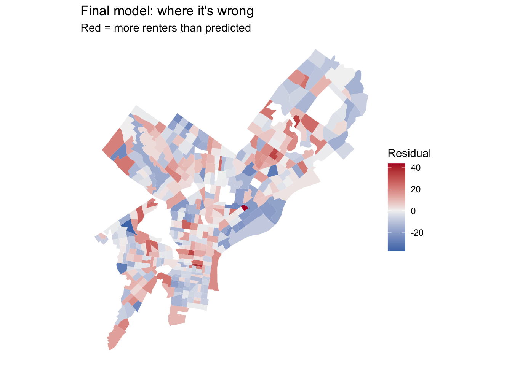
[1] 13.25768[1] 12.59394Compared with the baseline map in Part 2C, the final model’s errors are smaller overall. The typical error (the standard deviation of the residuals) drops from 13.3 to 12.6 percentage points. The blue strip along the Delaware River and the red tract on the southern waterfront become lighter. Red clusters remain in Manayunk, Roxborough, and parts of the lower Northeast, and some blue tracts remain in the Northwest.
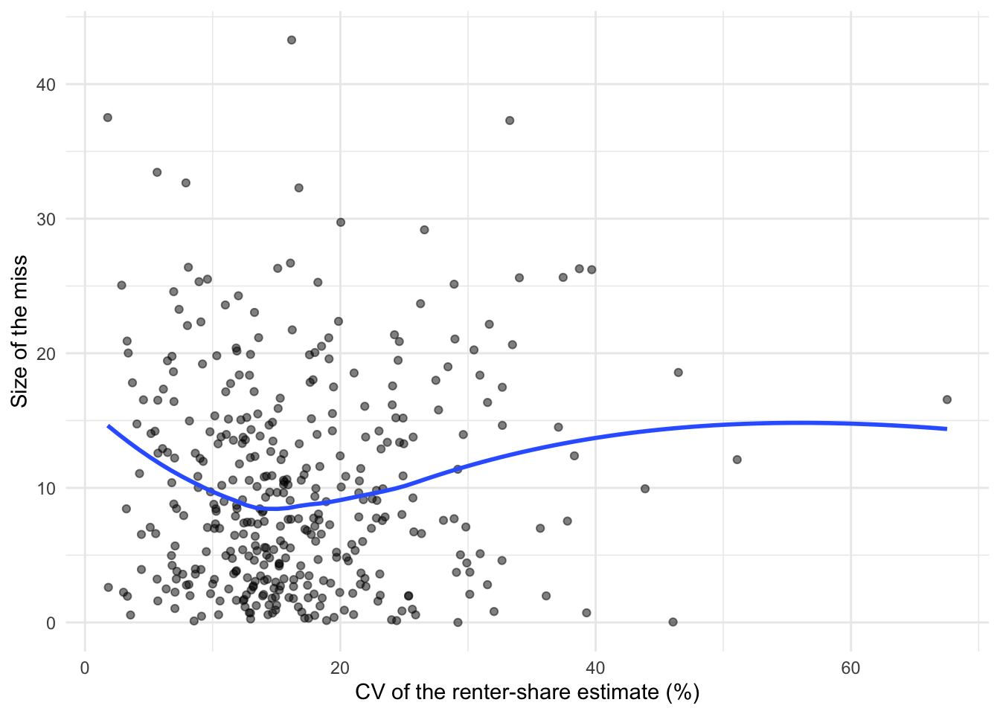
[1] 0.05714444[1] 0.6036745My baseline model was off by about 13.4 percentage points on tracts it had not seen. The final model lowers this to 13.0, a small improvement of about 0.4 points. What surprised me most was that the spatial features barely helped. Burglary density was the only one that helped a little, maybe because burglaries are more common where homes are packed closely together. The most disappointing was distance to the nearest campus, which made the model worse. The campus file has many small buildings across the city, and age and education already capture students. Most of the improvement came from reshaping the variables instead: taking logs and letting the distance to City Hall curve. I learned that a variable can look useful on a map but add little once similar variables are already in the model.
Take median age. The β̂ reading: if two tracts are the same in every other way, the one whose median age is 10 years older is predicted to have about 9.4 percentage points fewer renters (the coefficient is −0.94 per year). This shows a relationship, not a cause; getting older does not by itself make people buy homes. The ŷ reading: median age stays in the model because it helps predict the renter share more accurately, whether or not it is a cause.
The final map still shows clusters in Manayunk, Roxborough, and parts of the lower Northeast, where there are more renters than predicted. Next, I would add the age and size of buildings from the Office of Property Assessment, because old rowhouses split into apartments are often rented even where incomes are moderate. I would also add college enrollment from the Census (table B14007) to tell students apart from long-term renters.
The last plot shows that the size of the error has almost nothing to do with how reliable the estimate is. Big errors happen at every CV level, and the correlation is only about 0.06. Still, for about 60% of tracts, the model’s error is smaller than the estimate’s own margin of error, so in those tracts the error could just be survey noise. But the biggest errors seem to come from the model missing something, not from noisy data.
---
title: "Assignment: Building Features, Watching What Happens"
subtitle: "Predicting the renter share of Philadelphia census tracts"
author: "Rutong Chen"
date: today
format:
html:
toc: true
code-fold: show
code-tools: true
execute:
warning: false
message: false
freeze: false
---
## The question
Philadelphia has both renters and homeowners, and the mix changes from one neighborhood to the next. In this analysis, I try to predict the **share of homes that are rented** in each census tract. I start with a simple model that uses Census data, then add new features made from the city's open data, and then reshape some variables. After each change, I record how well the model predicts tracts it has not seen, so I can tell which changes really help.
---
## Part 0: Setup
```{r}
#| label: setup
library(tidyverse)
library(tidycensus)
library(sf)
library(caret)
Sys.getenv("CENSUS_API_KEY") != ""
```
I test every model with the helper below. It splits the tracts into 10 groups, trains the model on 9 of them, and checks how far off it is on the 10th, repeating this 10 times. It uses the same split every time, so all models are tested fairly. It also stops if a variable has missing values, so no tracts are dropped by mistake.
```{r}
#| label: cv-helper
ctrl <- trainControl(method = "cv", number = 10)
cv_rmse <- function(formula, data) {
df <- if (inherits(data, "sf")) st_drop_geometry(data) else data
vars <- all.vars(formula)
bad <- vars[sapply(vars, function(v) any(is.na(df[[v]])))]
if (length(bad) > 0) {
stop("These variables have NAs: ", paste(bad, collapse = ", "),
". Fill them or choose another variable (Rule 1: don't drop rows).")
}
set.seed(5080)
fit <- train(formula, data = df, method = "lm", trControl = ctrl)
fit$results$RMSE
}
```
```{r}
#| label: log-start
model_log <- tibble(
model = character(),
added = character(),
cv_rmse = numeric(),
notes = character()
)
```
---
## Part 1: Choosing the outcome
### 1A: Pulling the outcome and baseline predictors
My outcome is the renter share: the number of renter households (`B25003_003`) divided by all occupied homes (`B25003_001`). For the baseline model, I use four Census variables that should be related to renting: median household income, median age, average household size, and the share of adults with a bachelor's degree or higher. I do not use the number of units in a building (`B25024`). Apartment buildings are almost always rented, so that variable would nearly give away the answer. This is called leakage.
```{r}
#| label: pull
philly_tracts <- get_acs(
geography = "tract",
state = "PA",
county = "Philadelphia",
variables = c(
total_pop = "B01003_001",
occ_units = "B25003_001", # occupied housing units
renter_occ = "B25003_003", # renter-occupied units
med_inc = "B19013_001", # median household income
med_age = "B01002_001", # median age
avg_hh_size = "B25010_001", # average household size
edu_total = "B15003_001", # population 25+
ba = "B15003_022",
ma = "B15003_023",
prof = "B15003_024",
phd = "B15003_025"
),
year = 2023,
survey = "acs5",
output = "wide",
geometry = TRUE
) %>%
st_transform(2272)
```
The outcome is a percentage, so I use `moe_prop()` to get its margin of error. I then use it to calculate the coefficient of variation (CV), which shows how reliable each estimate is.
```{r}
#| label: build-outcome
philly_tracts <- philly_tracts %>%
mutate(
y = case_when(
occ_unitsE > 0 ~ renter_occE / occ_unitsE * 100,
TRUE ~ NA_real_
),
y_moe = case_when(
occ_unitsE > 0 ~ moe_prop(renter_occE, occ_unitsE, renter_occM, occ_unitsM) * 100,
TRUE ~ NA_real_
),
y_cv = case_when(
y > 0 ~ (y_moe / 1.645) / y * 100,
TRUE ~ NA_real_
),
med_inc = med_incE,
med_age = med_ageE,
avg_hh_size = avg_hh_sizeE,
pct_ba = case_when(
edu_totalE > 0 ~ (baE + maE + profE + phdE) / edu_totalE * 100,
TRUE ~ NA_real_
)
)
```
### 1B: Is it reliable enough to model?
A CV below 12% means the estimate is reliable, 12% to 40% means somewhat reliable, and above 40% means unreliable.
```{r}
#| label: reliability
sum(is.na(philly_tracts$y))
summary(philly_tracts$y_cv)
philly_tracts %>%
mutate(reliability = case_when(
is.na(y_cv) ~ "Unavailable",
y_cv < 12 ~ "Reliable",
y_cv <= 40 ~ "Somewhat reliable",
TRUE ~ "Unreliable"
)) %>%
st_drop_geometry() %>%
count(reliability)
ggplot(philly_tracts, aes(x = y)) +
geom_histogram(bins = 30, fill = "steelblue") +
theme_minimal() +
labs(
title = "Renter share across Philadelphia tracts",
subtitle = "2019–2023 ACS",
x = "Renter-occupied units (%)",
y = "Number of tracts"
)
```
The renter share is fairly reliable because it is based on large numbers: every occupied home is either owned or rented. Of the 408 tracts, 20 have no value. The median CV is 15.1%. 111 tracts are reliable, 271 are somewhat reliable, only 5 are unreliable, and 21 have no CV. Five unreliable tracts is only about 1%, far below the one-third limit, so this outcome is safe to model. The few unreliable tracts are places where very few people rent. A city agency, such as the Division of Housing and Community Development, could use this prediction to find renter neighborhoods and target programs like eviction prevention and home repair help.
### 1C: Deciding which tracts to model
I filter the tracts once here. Every later step uses the same `tracts` data.
```{r}
#| label: filter
tracts <- philly_tracts %>%
filter(total_popE > 0,
!is.na(y),
!is.na(med_inc),
!is.na(med_age),
!is.na(avg_hh_size),
!is.na(pct_ba))
nrow(philly_tracts)
nrow(tracts)
```
I drop 27 of 408 tracts and keep 381. The dropped tracts have no residents or households, such as Fairmount Park, the airport, and industrial areas along the rivers, or they are missing income data. Almost no renters live in them.
---
## Part 2: Baseline model
### 2A: Looking first
```{r}
#| label: look
ggplot(tracts, aes(x = med_inc, y = y)) +
geom_point(alpha = 0.5) +
geom_smooth(method = "lm", se = FALSE) +
theme_minimal() +
labs(x = "Median household income", y = "Renter-occupied units (%)")
ggplot(tracts, aes(x = med_age, y = y)) +
geom_point(alpha = 0.5) +
geom_smooth(method = "lm", se = FALSE) +
theme_minimal() +
labs(x = "Median age", y = "Renter-occupied units (%)")
ggplot(tracts, aes(x = avg_hh_size, y = y)) +
geom_point(alpha = 0.5) +
geom_smooth(method = "lm", se = FALSE) +
theme_minimal() +
labs(x = "Average household size", y = "Renter-occupied units (%)")
ggplot(tracts, aes(x = pct_ba, y = y)) +
geom_point(alpha = 0.5) +
geom_smooth(method = "lm", se = FALSE) +
theme_minimal() +
labs(x = "Adults with a bachelor's degree or higher (%)", y = "Renter-occupied units (%)")
```
### 2B: Fitting and logging the baseline
```{r}
#| label: m1
f1 <- y ~ med_inc + med_age + avg_hh_size + pct_ba
m1 <- lm(f1, data = tracts)
summary(m1)
model_log <- model_log %>%
add_row(model = "m1", added = "ACS baseline",
cv_rmse = cv_rmse(f1, tracts),
notes = "income, median age, household size, % BA+")
model_log
```
On tracts it has not seen, the baseline model is off by about 13.4 percentage points on average. Its R² is 0.58, which means these four Census variables already explain more than half of the differences in renter share between tracts.
### 2C: Where the baseline is wrong
```{r}
#| label: resid-map-1
tracts <- tracts %>% mutate(resid_m1 = residuals(m1))
ggplot(tracts) +
geom_sf(aes(fill = resid_m1), color = NA) +
scale_fill_gradient2(low = "#2166ac", mid = "grey95", high = "#b2182b", midpoint = 0) +
theme_void() +
labs(title = "Baseline model: where it's wrong",
subtitle = "Red = more renters than predicted",
fill = "Residual")
```
The errors are not random; they form clusters. Blue means fewer renters than predicted, and red means more renters than predicted. The clearest blue area runs along the Delaware River north of Center City, with more blue tracts in parts of the Northwest. Red areas appear in South Philadelphia, including the large tract on the southern waterfront, in Manayunk and Roxborough, and in parts of the lower Northeast. One possible reason: along the Delaware, newer residents with college degrees live next to long-time homeowners, so the model expects more renters than there really are. In South Philadelphia and Manayunk, many rowhouses are rented to young adults. The model also does not know where students live or how safe a neighborhood is. So in Part 3, I add university campuses, burglaries, and shootings.
---
## Part 3: Getting data from Philadelphia's open data portal
```{r}
#| label: carto-helper
carto_get <- function(sql) {
url <- paste0("https://phl.carto.com/api/v2/sql?format=GeoJSON&q=", URLencode(sql))
st_read(url, quiet = TRUE)
}
```
I pull three data layers. All of them are from 2023 or earlier, so the model does not use information from the future. I count the records that have no location and remove them.
```{r}
#| label: my-layers
# Layer 1: residential burglaries, 2023
burglary <- carto_get(
"SELECT the_geom, text_general_code, dispatch_date
FROM incidents_part1_part2
WHERE dispatch_date >= '2023-01-01' AND dispatch_date < '2024-01-01'
AND text_general_code = 'Burglary Residential'"
) %>%
st_transform(st_crs(tracts))
nrow(burglary)
sum(st_is_empty(burglary))
burglary <- burglary %>% filter(!st_is_empty(burglary))
# Layer 2: shooting victims, 2023
shootings <- carto_get(
"SELECT the_geom, date_
FROM shootings
WHERE date_ >= '2023-01-01' AND date_ < '2024-01-01'"
) %>%
st_transform(st_crs(tracts))
nrow(shootings)
sum(st_is_empty(shootings))
shootings <- shootings %>% filter(!st_is_empty(shootings))
# Layer 3: university and college campuses
universities <- st_read("https://hub.arcgis.com/api/v3/datasets/8ad76bc179cf44bd9b1c23d6f66f57d1_0/downloads/data?format=geojson&spatialRefId=4326&where=1%3D1", quiet = TRUE) %>%
st_transform(st_crs(tracts))
nrow(universities)
sum(st_is_empty(universities))
universities <- universities %>% filter(!st_is_empty(universities))
```
119 of 3,800 burglary records and 1 of 1,673 shooting records have no location, so I remove them. All 644 campus records have a location.
I chose these layers based on the Part 2C map. Campuses show where students live, and students are mostly renters. The campus file has no year, but these campuses existed well before 2023, so it does not break the time rule. Burglaries and shootings describe neighborhood conditions that income alone does not show. None of these layers is made from renter data, so there is no leakage.
---
## Part 4: Building spatial features
### 4A: Counting and density
I divide the counts by tract area. Otherwise, bigger tracts would simply have more of everything.
```{r}
#| label: density
tracts <- tracts %>%
mutate(
area_sqmi = as.numeric(st_area(.)) / 27878400,
n_burglary = lengths(st_intersects(., burglary)),
burglary_per_sqmi = n_burglary / area_sqmi,
n_shootings = lengths(st_intersects(., shootings)),
shootings_per_sqmi = n_shootings / area_sqmi
)
summary(tracts$burglary_per_sqmi)
summary(tracts$shootings_per_sqmi)
```
### 4B: Distance to the nearest campus
```{r}
#| label: nearest
tract_pts <- st_point_on_surface(tracts)
nearest_idx <- st_nearest_feature(tract_pts, universities)
tracts <- tracts %>%
mutate(dist_univ_mi = as.numeric(
st_distance(tract_pts, universities[nearest_idx, ], by_element = TRUE)) / 5280)
summary(tracts$dist_univ_mi)
```
### 4C: Distance to City Hall
```{r}
#| label: city-hall
city_hall <- st_sfc(st_point(c(-75.1636, 39.9526)), crs = 4326) %>%
st_transform(st_crs(tracts))
tracts <- tracts %>%
mutate(dist_ch_mi = as.numeric(st_distance(tract_pts, city_hall)) / 5280)
summary(tracts$dist_ch_mi)
```
### 4D: Adding the features one at a time
```{r}
#| label: my-spatial
f2 <- y ~ med_inc + med_age + avg_hh_size + pct_ba + dist_univ_mi
model_log <- model_log %>%
add_row(model = "m2", added = "distance to nearest campus",
cv_rmse = cv_rmse(f2, tracts),
notes = "nearest distance")
f3 <- y ~ med_inc + med_age + avg_hh_size + pct_ba + dist_univ_mi +
burglary_per_sqmi
model_log <- model_log %>%
add_row(model = "m3", added = "burglary density",
cv_rmse = cv_rmse(f3, tracts),
notes = "2023 residential burglaries per sq mi")
f4 <- y ~ med_inc + med_age + avg_hh_size + pct_ba + dist_univ_mi +
burglary_per_sqmi + shootings_per_sqmi
model_log <- model_log %>%
add_row(model = "m4", added = "shooting density",
cv_rmse = cv_rmse(f4, tracts),
notes = "2023 shooting victims per sq mi")
f5 <- y ~ med_inc + med_age + avg_hh_size + pct_ba + dist_univ_mi +
burglary_per_sqmi + shootings_per_sqmi + dist_ch_mi
model_log <- model_log %>%
add_row(model = "m5", added = "distance to City Hall",
cv_rmse = cv_rmse(f5, tracts),
notes = "distance to one place")
model_log %>% mutate(cv_rmse = round(cv_rmse, 2)) %>% print(width = Inf)
```
None of the spatial features helped much. Burglary density was the only one that lowered the error, from 13.45 to 13.38. This may be because burglaries happen more where homes are packed closely together, which is also where many renters live. Even so, it did not beat the baseline's 13.35. Distance to the nearest campus helped the least: it raised the error from 13.35 to 13.45. The campus file has 644 separate buildings spread across the city, so almost every tract is close to one, and the distance does not point to student neighborhoods. Age and education already capture most of the student effect. Shooting density (13.40) and distance to City Hall (13.43) did not help either, probably because income and education already describe the same neighborhood differences.
---
## Part 5: Transforming features
I do not change the outcome itself, so all errors stay in percentage points and can be compared.
### 5A: Logs
```{r}
#| label: log-look
ggplot(tracts, aes(x = med_inc)) + geom_histogram(bins = 30) + theme_minimal()
ggplot(tracts, aes(x = burglary_per_sqmi)) + geom_histogram(bins = 30) + theme_minimal()
ggplot(tracts, aes(x = log1p(burglary_per_sqmi))) + geom_histogram(bins = 30) + theme_minimal()
```
Income and both densities are skewed: most tracts have small values and a few have very large ones. A log shrinks those large values. I use `log()` for income, which is never 0, and `log1p()` for the densities, which can be 0.
```{r}
#| label: m-log
f_log <- y ~ log(med_inc) + med_age + avg_hh_size + pct_ba + dist_univ_mi +
log1p(burglary_per_sqmi) + log1p(shootings_per_sqmi) + dist_ch_mi
model_log <- model_log %>%
add_row(model = "m6", added = "log of income and both densities",
cv_rmse = cv_rmse(f_log, tracts),
notes = "log() for income; log1p() for densities")
```
### 5B: Squared term
```{r}
#| label: squared-plot
ggplot(tracts, aes(x = dist_ch_mi, y = y)) +
geom_point(alpha = 0.4) +
geom_smooth(method = "lm", formula = y ~ x + I(x^2), se = FALSE, color = "red") +
theme_minimal()
```
```{r}
#| label: m-squared
f_sq <- y ~ log(med_inc) + med_age + avg_hh_size + pct_ba + dist_univ_mi +
log1p(burglary_per_sqmi) + log1p(shootings_per_sqmi) + dist_ch_mi + I(dist_ch_mi^2)
model_log <- model_log %>%
add_row(model = "m7", added = "squared distance to City Hall",
cv_rmse = cv_rmse(f_sq, tracts),
notes = "m6 + I(dist_ch_mi^2)")
```
### 5C: Categorical variable
```{r}
#| label: m-categorical
tracts <- tracts %>%
mutate(
ring = case_when(
dist_ch_mi < 2 ~ "Core",
dist_ch_mi < 5 ~ "Inner",
TRUE ~ "Outer"
),
ring = factor(ring, levels = c("Core", "Inner", "Outer"))
)
tracts %>% st_drop_geometry() %>% count(ring)
f_cat <- y ~ log(med_inc) + med_age + avg_hh_size + pct_ba + dist_univ_mi +
log1p(burglary_per_sqmi) + log1p(shootings_per_sqmi) + dist_ch_mi + ring
m_cat <- lm(f_cat, data = tracts)
summary(m_cat)
model_log <- model_log %>%
add_row(model = "m8", added = "ring (Core / Inner / Outer)",
cv_rmse = cv_rmse(f_cat, tracts),
notes = "m6 + ring; reference = Core")
model_log %>% mutate(cv_rmse = round(cv_rmse, 2)) %>% print(width = Inf)
```
The log helped the most. It lowered the error from 13.43 (m5) to 13.11 (m6). Adding the squared distance to City Hall lowered it again to 12.96 (m7). The rings barely changed it (13.09 in m8 versus 13.11 in m6). For the ring variable, Core (within 2 miles of City Hall) is the comparison group. If everything else in m8 is the same, an Outer-ring tract has a renter share about 6.5 percentage points lower than a Core tract.
---
## Part 6: The final model
I choose the final model by its prediction error, not by p-values. The final model is m7, which has the lowest error (12.96). I leave out the rings because they lowered the error by only 0.02 and repeat what the distance variables already say. I keep all four spatial features. Alone they did not help, but together with the logs and the squared term they are part of the best model.
```{r}
#| label: final
f_final <- y ~ log(med_inc) + med_age + avg_hh_size + pct_ba + dist_univ_mi +
log1p(burglary_per_sqmi) + log1p(shootings_per_sqmi) + dist_ch_mi +
I(dist_ch_mi^2)
m_final <- lm(f_final, data = tracts)
summary(m_final)
model_log <- model_log %>%
add_row(model = "final", added = "same as m7",
cv_rmse = cv_rmse(f_final, tracts),
notes = "logs + squared distance to City Hall; ring dropped")
model_log %>% mutate(cv_rmse = round(cv_rmse, 2)) %>% print(width = Inf)
```
### Where the final model is wrong
```{r}
#| label: resid-map-2
tracts <- tracts %>% mutate(resid_final = residuals(m_final))
ggplot(tracts) +
geom_sf(aes(fill = resid_final), color = NA) +
scale_fill_gradient2(low = "#2166ac", mid = "grey95", high = "#b2182b", midpoint = 0) +
theme_void() +
labs(title = "Final model: where it's wrong",
subtitle = "Red = more renters than predicted",
fill = "Residual")
sd(tracts$resid_m1)
sd(tracts$resid_final)
```
Compared with the baseline map in Part 2C, the final model's errors are smaller overall. The typical error (the standard deviation of the residuals) drops from 13.3 to 12.6 percentage points. The blue strip along the Delaware River and the red tract on the southern waterfront become lighter. Red clusters remain in Manayunk, Roxborough, and parts of the lower Northeast, and some blue tracts remain in the Northwest.
### Are the biggest misses in the least reliable tracts?
```{r}
#| label: fog
ggplot(tracts, aes(x = y_cv, y = abs(resid_final))) +
geom_point(alpha = 0.5) +
geom_smooth(se = FALSE) +
labs(x = "CV of the renter-share estimate (%)", y = "Size of the miss") +
theme_minimal()
cor(tracts$y_cv, abs(tracts$resid_final), use = "complete.obs")
mean(abs(tracts$resid_final) < tracts$y_moe, na.rm = TRUE)
```
---
## Part 7: Reflection
My baseline model was off by about 13.4 percentage points on tracts it had not seen. The final model lowers this to 13.0, a small improvement of about 0.4 points. What surprised me most was that the spatial features barely helped. Burglary density was the only one that helped a little, maybe because burglaries are more common where homes are packed closely together. The most disappointing was distance to the nearest campus, which made the model worse. The campus file has many small buildings across the city, and age and education already capture students. Most of the improvement came from reshaping the variables instead: taking logs and letting the distance to City Hall curve. I learned that a variable can look useful on a map but add little once similar variables are already in the model.
Take median age. The β̂ reading: if two tracts are the same in every other way, the one whose median age is 10 years older is predicted to have about 9.4 percentage points fewer renters (the coefficient is −0.94 per year). This shows a relationship, not a cause; getting older does not by itself make people buy homes. The ŷ reading: median age stays in the model because it helps predict the renter share more accurately, whether or not it is a cause.
The final map still shows clusters in Manayunk, Roxborough, and parts of the lower Northeast, where there are more renters than predicted. Next, I would add the age and size of buildings from the Office of Property Assessment, because old rowhouses split into apartments are often rented even where incomes are moderate. I would also add college enrollment from the Census (table B14007) to tell students apart from long-term renters.
The last plot shows that the size of the error has almost nothing to do with how reliable the estimate is. Big errors happen at every CV level, and the correlation is only about 0.06. Still, for about 60% of tracts, the model's error is smaller than the estimate's own margin of error, so in those tracts the error could just be survey noise. But the biggest errors seem to come from the model missing something, not from noisy data.